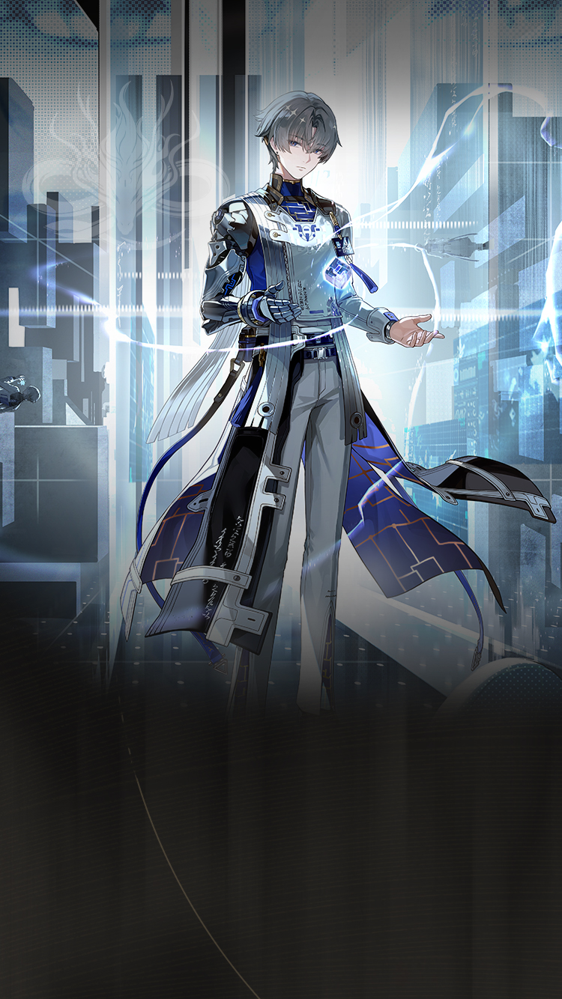

WaveKit
WaveKit

Wuthering Waves Resonator guide
Xiangli Yao build, teams, weapons, and Echoes
Electro carry with a clear core loop.
ElectroGauntletsMain DPS5★ ResonatorGuide checked
Quick build
- Role
- Main DPS
- Team type
- Electro Liberation
- Best weapon
- Verity's Handle
- Alternate weapons
- Abyss Surges / Stonard / Marcato
- Sonata
- Void Thunder
- Echo cost
- 4-3-3-1-1
- Main Echo
- Nightmare: Thundering Mephis
- Main stats
- CRIT Rate or CRIT DMG / Electro DMG / ATK%
Stat priority
- CRIT Rate / CRIT DMG balance
- Electro DMG or ATK%
- ATK% or HP% if the kit scales that way
- Energy Regen only if the rotation needs it
Team direction
Xiangli Yao likes Electro/Liberation support or the newer Tune shell if those pieces are owned.
Best-shell targetXiangli Yao / Yinlin / Shorekeeper
Useful shellXiangli Yao / Lynae / Mornye
Useful shellXiangli Yao / Yuanwu / Verina
Useful teammates
Best helpers
YinlinMornyeLynaeYuanwu
Good alternatives
LumiRebeccaMortefi
Safer third slots
ShorekeeperVerinaBaizhi
Simple play pattern
- Set up both teammates before giving Xiangli Yao the main damage window.
- Use the listed Sonata and main Echo as the first build target, then improve substats slowly.
- If the team feels stressful, use the helper to choose a real healer or safer third slot.
Build priority
- Difficulty
- Beginner friendly
- Safety
- Bring a healer if learning
- Data note
- Guide checked
Xiangli Yao can work well, but build priority depends heavily on your owned teammates and weapons.